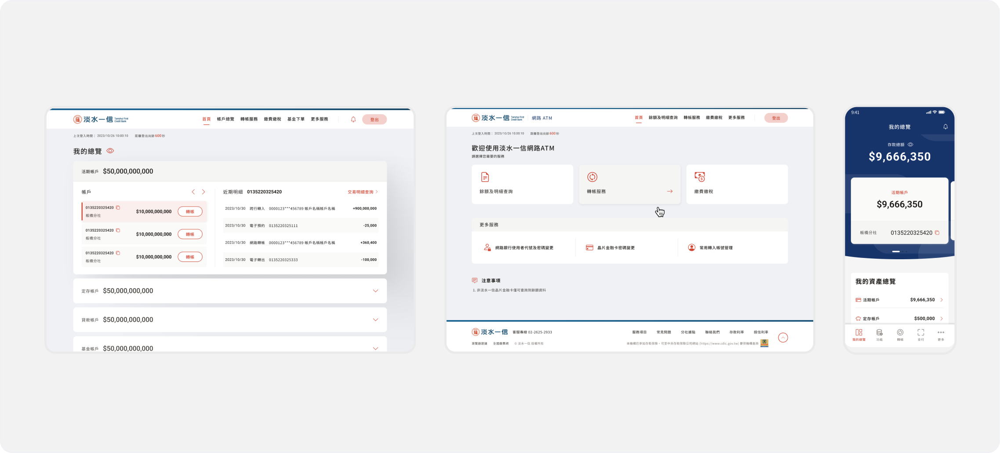
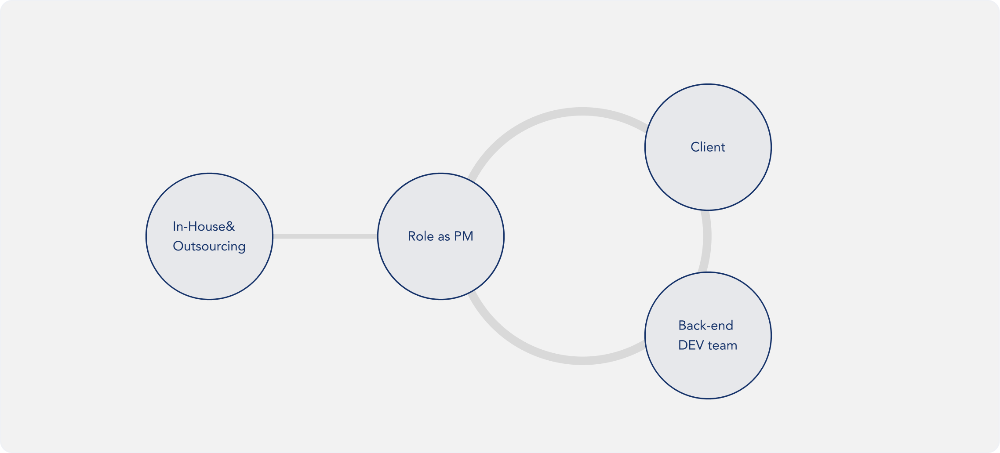
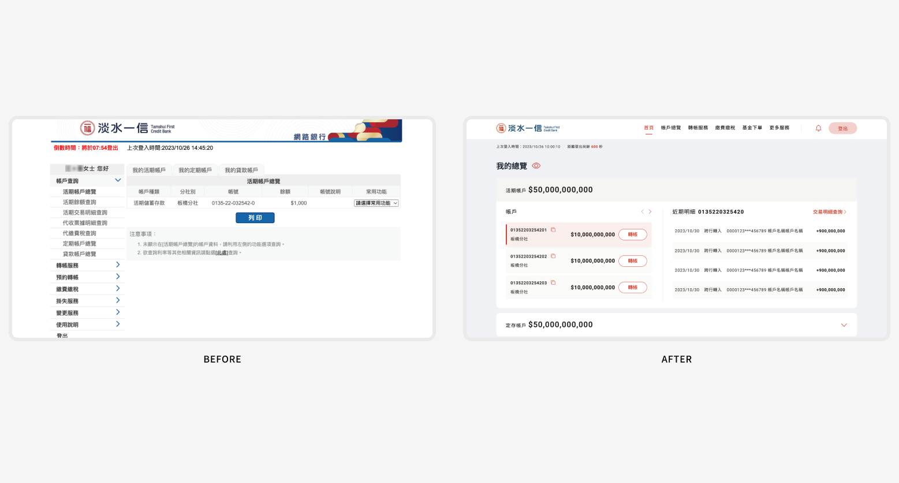
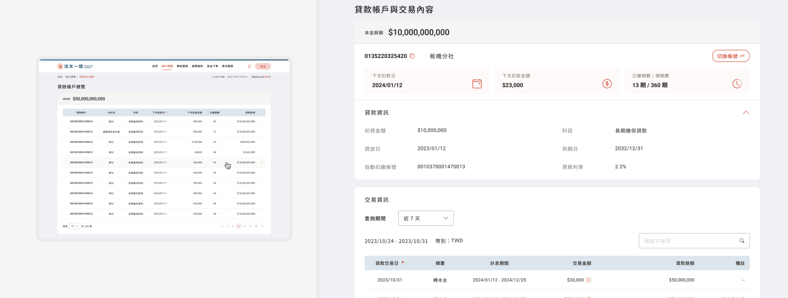
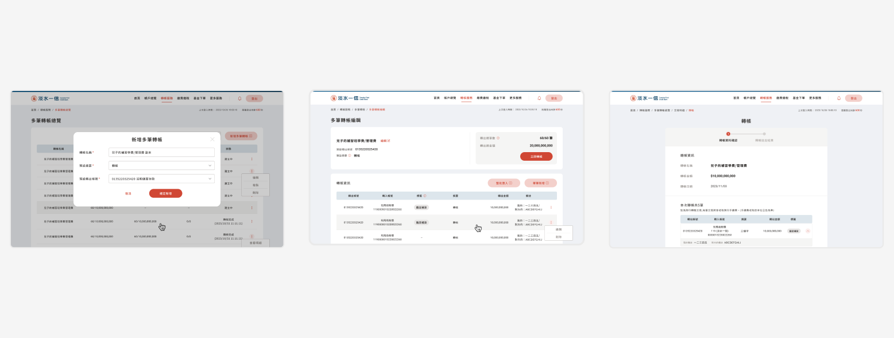
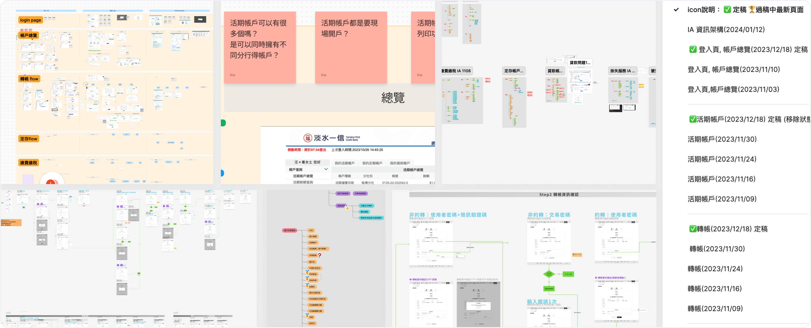
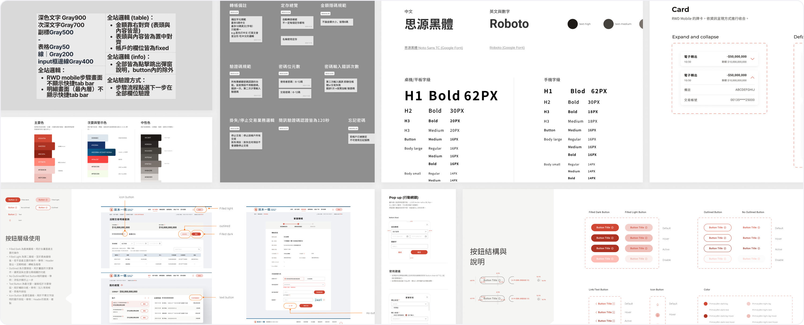

UX designer
Hybrid app
Context
About the project
In mid-2024, TFCC is going to stop working with the original service provider and start working with another one while they need a new design.
Project scope
Web / ATM / App — Responsive online banking and hybrid app. Redefine information structure and integrate with new functions for revamp.

Roadmap

Context
Stakeholders
- TFCC plan and IT department
- Back-end development partner
- In-house UI designers
- Outsourcing front-end developers

Challenge
What we needed to solve
- Tight 4-month timeline for comprehensive design and front-end development
- Cross-functional communication across 10+ stakeholders
- Balancing stakeholder requirements with technical development constraints
Outcome
What we delivered
+ App
Strategy
Three design principles
Simple
The UI should incorporate strong branding colors while maintaining a clean interface that meets functional product usage scenarios.
Align
From the flow and wireframe stages, we not only addressed client requirements but also aligned with development partners to ensure feasibility and optimize development costs.
Advice first
As clients lacked digital and online banking experience, we often needed to provide initial ideas to facilitate meaningful discussions on key issues.
Design
Highlight features
Include Shortcut and Dashboard Framework into the Home Page
Through user requirement interviews, we learned that users typically have multiple accounts. As a result, we designed a more convenient structure for the homepage.

Define Information Structure of Overview and Detail Page
We established a multi-tiered information structure for banking overview and detail pages, facilitating quick information retrieval at both levels.

Big Challenge of Multi-Transfer Trading
As TFCC's multi-transfer feature is mainly used by local small businesses, our design targets a mid-point between personal and corporate scales. We added a labeling feature to preset and frequently used accounts, and redefined tasks considering scenarios where multi-transfers need verification.

Project Story
How we kept things moving
Daily catch-up for wireframe discussion. Create online banking screenshot board. Weekly 1–2 catch-up meetings with client and dev partner to push the check progression.
To ensure more orderly and rapid subsequent development, timely discussions with designers about various design logics — reducing them to the minimum viable level — can significantly lessen the burden on team collaboration. Such as typography units, the variation in neutral color values, etc.


Reflection
Takeaways
Gratitude for leadership and collaboration
Initially, I was apprehensive about taking on the responsibility of hosting such a significant project, especially as I was already managing another major website development simultaneously. I'm grateful for my manager's trust in my abilities, but I'm even more appreciative of the unwavering support from my team members.
Taking care of myself
While we all desire to expedite progress and push forward with all our might, limited resources often necessitate brief pauses. These moments of respite allow us to discover alternative communication methods and prevent us from falling into a state of emotional exhaustion.
Project success requires more than effort
It demands an understanding of the subtle dynamics and unwritten rules within hierarchical organizational structures.
Next Step